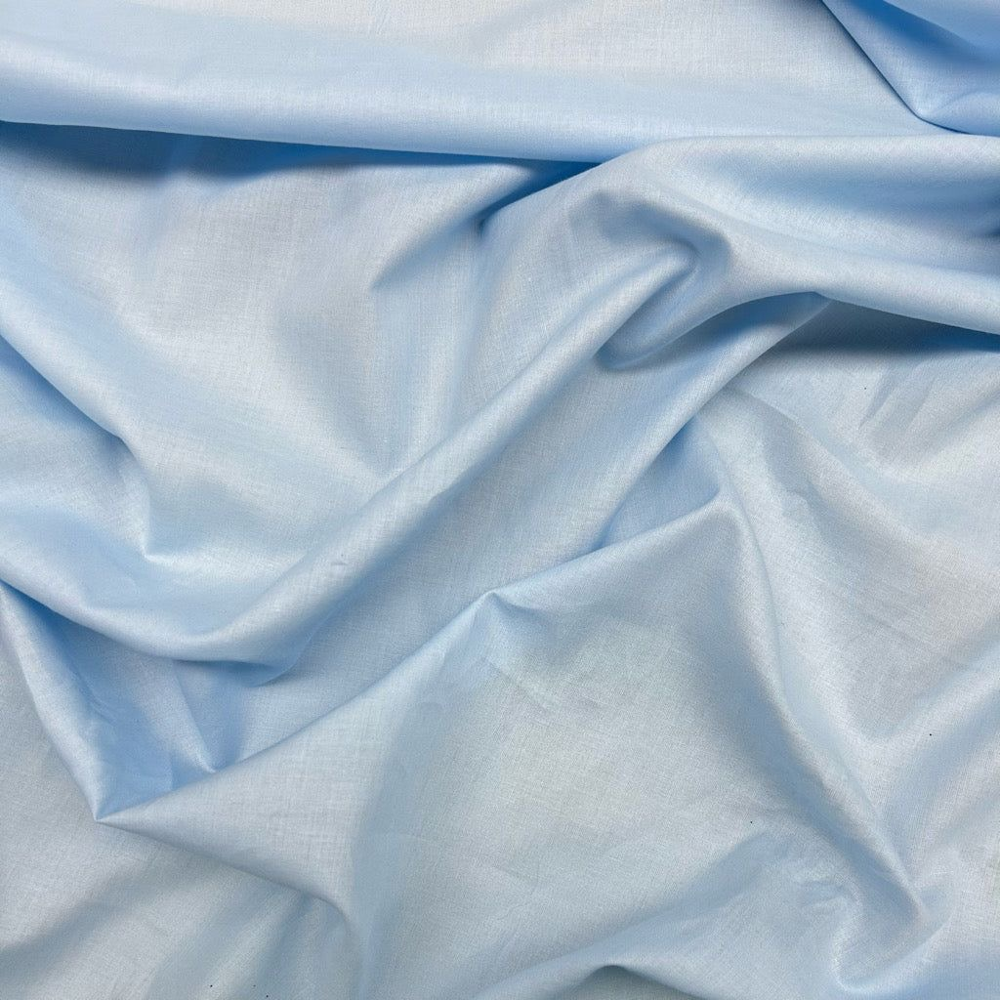
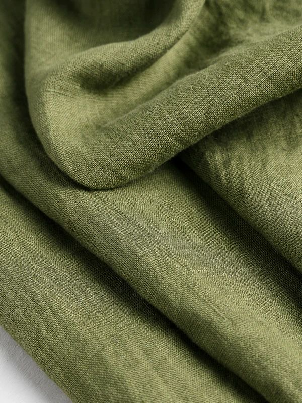

Cotton
GSM: 120–180
Use: Casual, Kidswear
Breathable, cost-effective for summer assortments
Sustainable
Denim
GSM: 250–400
Use: Bottomwear
High durability, suitable for core retail categories
Durable

Rayon
GSM: 110–150
Use: Dresses, Tops
Good drape for trend-led collections
FlowyPolyester
GSM: 180–240
Use: Activewear
Low cost, high durability for mass retail
Cost Efficient